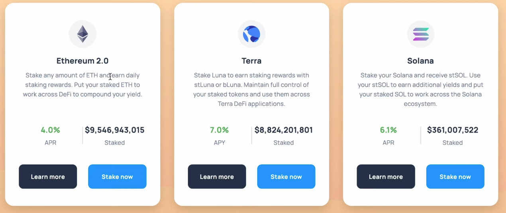

Lido（LDO）深度解析
Lido（LDO）深度解析
引言
以太坊 2.0（共识层）的质押规则对于普通用户来说存在一定的门槛和不便：
- 最低质押要求：节点必须质押 32 ETH 的倍数，金额较大。
- 锁定期：质押期间，ETH 不能从信标链中提取，只能等到以太坊 2.0 完全启动后才能赎回。
针对这些痛点，Lido 提供了以太坊 2.0 的去中心化质押服务，允许用户以任意数量的 ETH 参与质押，并获得可交易的衍生品 stETH。本文将深入探讨 Lido 的产品机制、操作流程、代币模型，以及其在 DeFi 生态系统中的作用。
Lido 的产品机制
概述
Lido 旨在解决以太坊 2.0 质押的高门槛和流动性问题。通过 Lido，用户可以：
- 质押任意数量的 ETH：无需满足 32 ETH 的最低要求。
- 获得 stETH 凭证：质押 ETH 后，用户会收到等量的 stETH。
- 流动性支持：stETH 可以在二级市场交易，提供了质押期间的流动性。
- 每日收益：用户每日获得的质押奖励会反映在 stETH 的余额上。
- 低服务费：整个过程只需支付 10% 的服务费给 Lido DAO。
关键角色
Lido 系统主要由以下三个角色组成：
- 质押者（Stakers）：将 ETH 质押到 Lido 协议，获得 stETH。
- 节点运营商（Node Operators）：负责运行验证节点，维护网络安全。
- 验证人（Validators）：承担预言机的职责，负责以太坊 1.0 和信标链之间的通信。
奖励分配
- 质押奖励：质押者每日获得的奖励会自动累加到 stETH 余额中。
- 服务费分配：Lido 收取的 10%
服务费，按照以下比例分配：
- 50% 给节点运营商。
- 50% 进入社区金库，用于项目发展。
操作流程
1. 质押 ETH
用户可以通过 Lido 官方网站或支持的 DApp 进行质押：
- 访问 Lido 网站：点击 "Stake Now" 按钮。 
- 连接钱包：使用支持的以太坊钱包（如 MetaMask）进行连接。
- 输入质押数量：输入想要质押的 ETH 数量。
- 确认交易：支付交易费用，完成质押。
注意事项：
- 不可逆性：ETH 转为 stETH 后，在以太坊 2.0 完全上线之前无法直接赎回 ETH。
- 收益累积：stETH 会每日计算利息，收益自动复利。
2. 获取 stETH
- stETH 凭证：质押后，用户会收到等量的 stETH，代表其在 Lido 协议中的权益。
- 流动性支持：stETH 可以在二级市场交易，或用于参与 DeFi 协议。
3. 参与 DeFi 生态
stETH 已与多个主流 DeFi 协议集成：
- Curve：stETH/ETH 池拥有巨大的流动性，可用于流动性挖矿。
- Aave：支持使用 stETH 作为抵押品进行借贷。
- Yearn：可以将 crvSTETH 存入 Yearn 的机枪池，实现收益复投。
Wrap 机制
wstETH 的引入
Lido 提供了 wstETH（wrapped stETH），解决了 stETH 数量变化带来的不便：
- 固定数量：wstETH 的数量不会因为质押奖励而变化，方便计算和使用。
- 价格增长：wstETH 的价格会随着质押奖励的累积而上涨。
转换流程
stETH 转换为 wstETH：
1
2
3function wrap(uint256 _stETHAmount) external returns (uint256 wstETHAmount) {
// 用户将 stETH 存入合约，获得等价值的 wstETH
}wstETH 转换为 stETH：
1
2
3function unwrap(uint256 _wstETHAmount) external returns (uint256 stETHAmount) {
// 用户将 wstETH 赎回，获得增加了奖励的 stETH
}
应用场景
- DeFi 集成：wstETH 更适合与一些需要固定数量代币的 DeFi 协议集成。
- 收益优化：持有 wstETH 的用户，其价值会随着时间增长，方便长期投资。
平台数据
截至 2023 年 10 月，Lido 平台的主要数据如下：
| 指标 | 数值 |
|---|---|
| 质押的 ETH 总量 | 超过 800 万 ETH |
| stETH 市值 | 超过 100 亿美元 |
| LDO 市值 | 超过 20 亿美元 |
| 支持的网络 | 以太坊、Solana 等 |
| 合作的 DeFi 协议数量 | 超过 30 个 |
（数据仅供参考，请以实际情况为准）
LDO 代币模型
基本信息
- 代币名称：Lido DAO Token
- 代币符号：LDO
- 总供应量：1,000,000,000 枚
分配情况
| 分配类别 | 数量（枚） | 占比 |
|---|---|---|
| DAO 金库 | 363,200,000 | 36.32% |
| 投资者 | 221,800,000 | 22.18% |
| 初始 Lido 开发人员 | 200,000,000 | 20% |
| 验证者和签名持有者奖励 | 65,000,000 | 6.5% |
| 创始人和未来员工 | 150,000,000 | 15% |
流动性奖励与融资
融资轮：
- 2021 年 4 月，Lido 出售了 10%（100,000,000 枚）的 LDO，融资约 7,300 万美元。
- 锁定期：1 年后线性释放。
流动性奖励（24,940,000 枚）：
- 分配给 Curve、1inch 等平台的流动性挖矿和奖励计划。
- 空投：4,000,000 枚 LDO。
解锁计划
- 锁定期：部分代币有 1 年的锁定期，于 2021 年 12 月 17 日解锁。
- 释放方式：12 个月的线性释放期，逐步释放到市场。
数学模型与收益计算
stETH 的收益计算
stETH 的余额会根据质押奖励每日增加，其增长可以表示为：
\[ \text{stETH\_balance}_{t} = \text{stETH\_balance}_{t-1} \times \left(1 + \frac{\text{APR}}{365}\right) \]
其中：
- ( ) 是年化收益率。
- ( t ) 是时间（天）。
wstETH 的价格计算
wstETH 的价格会随着 stETH 的收益而增加：
\[ \text{wstETH\_price}_{t} = \text{wstETH\_price}_{t-1} \times \left(1 + \frac{\text{APR}}{365}\right) \]
转换关系：
\[ \text{wstETH\_amount} = \frac{\text{stETH\_amount}}{\text{wstETH\_price}} \]
示例
初始状态：
- 质押 10 ETH，获得 10 stETH。
- wstETH 初始价格为 1。
一天后（假设 APR 为 5%）：
stETH 余额：
\[ 10 \times \left(1 + \frac{5\%}{365}\right) \approx 10.00137 \]
wstETH 价格：
\[ 1 \times \left(1 + \frac{5\%}{365}\right) \approx 1.000137 \]
wstETH 数量：
\[ \frac{10.00137}{1.000137} = 10 \]
（wstETH 数量保持不变）
安全与风险
- 质押风险：节点可能被罚没（Slashing），导致质押的 ETH 损失。
- 智能合约风险：尽管 Lido 的合约经过审计，但仍存在漏洞的可能性。
- 流动性风险：stETH 价格可能偏离 ETH，导致兑换损失。
智能合约与代码示例
以下是一个使用 Solidity 与 Lido 协议交互的简单示例，展示如何质押 ETH 并获取 stETH。
1 | |
注意：上述代码仅供参考，实际开发中需要处理代币接收、权限控制等完整逻辑。
总结
Lido 通过提供去中心化的质押解决方案，降低了以太坊 2.0 质押的门槛，并为用户提供了质押期间的流动性。其创新的 stETH 和 wstETH 机制，以及与多个 DeFi 协议的集成，极大地丰富了用户的投资策略。然而，用户在参与之前，应充分了解相关风险，谨慎决策。